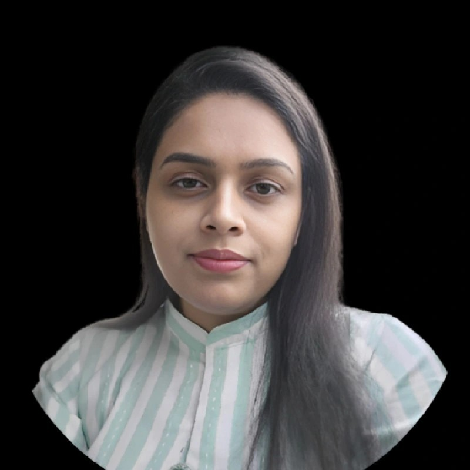

Ontario · 2026
Long-Term Occasional Teacher
Completed a full-term elementary teaching assignment with instructional responsibility for five Intermediate mathematics classes, including planning, assessment, differentiation and reporting.
Hello, I’m Harleen Kaur — an educator passionate about creating inclusive, engaging learning experiences where every student feels supported, challenged and capable of success.

I am an Ontario Certified Teacher with Primary, Junior and Intermediate qualifications and a background in science education. My teaching journey includes experience in India and Ontario, supporting learners across elementary grades and subject areas.
I believe students learn best when they feel seen, respected and included. I work to build positive relationships, make learning goals clear, and use purposeful instruction, meaningful feedback and flexible supports to help students make progress.
A blend of subject knowledge, classroom practice and a commitment to helping diverse learners thrive.
Completed a full-term elementary teaching assignment with instructional responsibility for five Intermediate mathematics classes, including planning, assessment, differentiation and reporting.
Supported learners across elementary grades through occasional teaching and earlier Educational Assistant experience, including students with varied learning strengths and support needs.
Ontario Certified Teacher with Primary, Junior and Intermediate qualifications; continued professional learning in inclusive education and student support.
Ten years of teaching and tutoring experience, with a focus on Chemistry and Biology for secondary and senior secondary learners.
A selection of useful, engaging learning spaces for practising skills, exploring new ideas and building confidence. Families should review each site and its privacy settings before use.
Free Ontario curriculum-aligned learning resources from Kindergarten to Grade 12.
Explore TVO Learn ↗Interactive mathematics tools, games and learning supports for K–12.
Explore Mathies ↗Educational videos, games and activities for younger learners.
Visit TVO Kids ↗Create stories, games and animations while learning the basics of coding.
Start creating ↗Explore science and mathematics through interactive simulations.
Try a simulation ↗Practice and instructional videos across mathematics, science and more.
Start learning ↗Selected professional resources to support curriculum planning, inclusive instruction, assessment and ongoing learning.
Ontario curriculum, educator qualifications, professional learning and ministry resources.
Visit Ontario.ca ↗Curated K–12 learning activities, teacher toolkits and webinars.
Explore teacher resources ↗Evidence-informed resources to support students with learning disabilities.
Explore LD@School ↗Guidance for designing learning environments that reduce barriers and increase access.
Explore UDL ↗Professional standards, certification information and resources for Ontario educators.
Visit OCT ↗Professional learning, member resources and information about public elementary education.
Visit ETFO ↗Thank you for visiting my professional portfolio. I welcome opportunities to connect with fellow educators, share learning resources and collaborate in support of students.